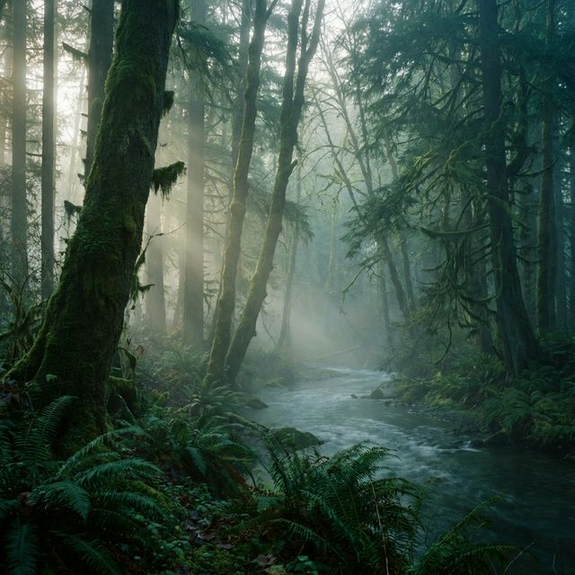
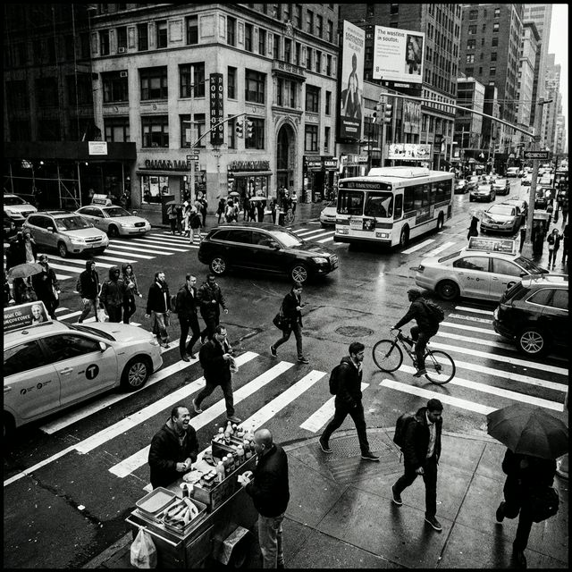

Nature & Landscapes
My lens focuses on the quiet beauty of nature and the stillness of the world.

Mist Over the Pines
Added on: 02 Feb 2026

Golden Hour
Added on: 03 Feb 2026

The Lone Path
Added on: 04 Feb 2026
Candid Urban Moments
Street photography is about finding beauty in the chaos. It's the art of the decisive moment.

Intersection Rhythm
Added on: 06 Feb 2026

Shadows of the Subway
Added on: 07 Feb 2026

The Rain Walkers
Added on: 08 Feb 2026